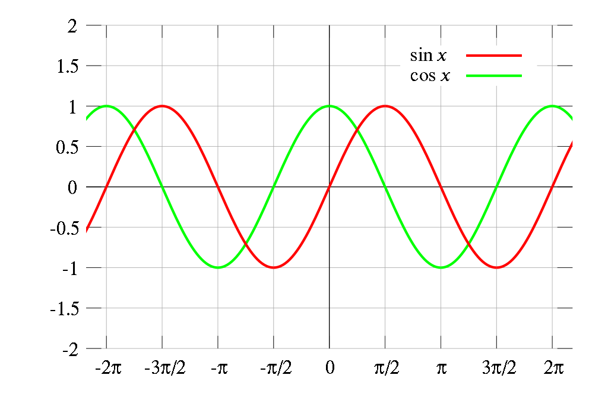

前面已经简单介绍了角，旋转，用到了Math.sin,Math.cos和Math.atan2这三个用的最多的三角函数javascript方法，接下来，我们看看sin和cos的取值范围

sin和cos的取值范围在-1和1之间，
根据正弦和余弦取值范围的这个特性，我们就可以做出很多动画效果，比如呼吸灯的效果，平滑上下运动，心跳效果，甚至是不规则的运动轨迹
平滑上下运动
脉冲运动
随机
圆形与椭圆
结合项目实际-旋转木马